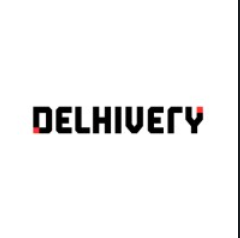

Deval Sonani.
Full-Stack Developer focused on system architecture, operational excellence, and crafting scalable, high-throughput backend services that deliver a great user experience.
Full-Stack Developer focused on system architecture, operational excellence, and crafting scalable, high-throughput backend services that deliver a great user experience.
Experienced Full-Stack Developer with almost 5 years of experience designing and delivering high-concurrency distributed systems, scalable microservices, and data-intensive backend platforms. Skilled in Java, Go, and Python, with a strong record of leading cross-functional engineering efforts in fast-paced e-commerce and logistics environments.
Delivered mission-critical systems from the ground up, including a subscription auto-renewal engine processing 10M+ daily transactions at GoDaddy and a last-mile load-allocation solver routing 100k+ daily packages at Delhivery.
Expertise in developing Agentic AI workflows, fine-tuning RAG pipelines, and rigorously evaluating ML models for production.

Multi-region subscription renewal engine processing massive daily events at GoDaddy with DynamoDB Global Tables for race-condition prevention.
Core logistics optimization engine modeled as a MILP using Gurobi, routing massive package volumes daily across 500+ distribution centers.
Semantic classification pipeline using Gemini LLM and ChromaDB vector embeddings to categorize payment declination logs and optimize A/B experiments.
Decomposed a Cars24 monolith into microservices with Closure Table org-tree design, slashing query latency by 99%.
AI-powered logistics support agent built at the Google × Delhivery Gen-AI Hackathon. Runner-Up out of 40+ teams.
Java/Spring Boot event-streaming gateway publishing real-time allocation snapshots via Apache Kafka and AWS Kinesis on EKS.
{
"name": "deval-sonani",
"role": "Full-Stack Systems Engineer",
"dependencies": {
"java": "^21.0.0",
"python": "^3.11.0",
"go": "^1.22.0",
"typescript": "^5.0.0"
},
"infrastructure": {
"aws": "latest",
"docker": "latest",
"kubernetes": "latest"
},
"data": {
"postgresql": "^16.0.0",
"kafka": "latest",
"redis": "latest"
}
}
Dhirubhai Ambani Institute of Information and Communication Technology (DA-IICT)
CGPA: 8.8 / 10
Academic Rank: ACPC All-India Rank 24 – Admission Committee for Professional Courses, Gujarat.
Certified AWS Solutions Architect Associate, demonstrating expertise in designing highly available and scalable cloud infrastructure.
Certified MongoDB Developer Associate, skilled in advanced aggregation pipelines, indexing strategies, and document modeling.
Highly active on Codeforces and LeetCode, specializing in advanced graph algorithms, dynamic programming, and systems-level optimization.